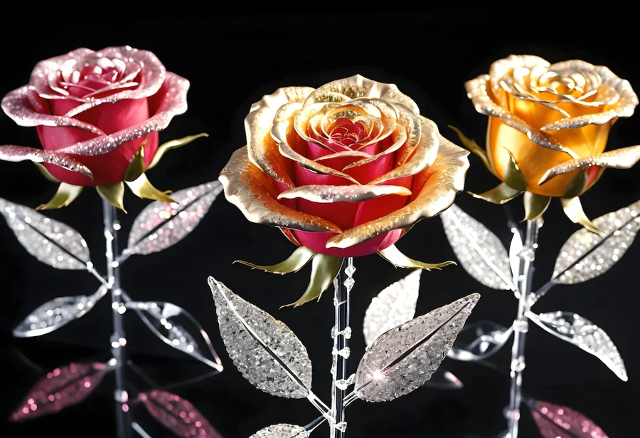
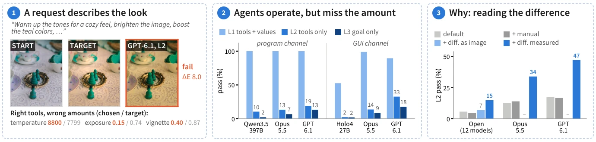

GoldiBench
Agents pick the right editing tools, but they cannot judge how much of each tool a look needs.


Same tool. How much of it?
darktable task b000: the answer is exposure +0.943 EV. Move the dial to apply the same tool at other strengths.
Pass: closeness ≥ 0.75 and mean CIEDE2000 ΔE ≤ 4. Half and double strength fail on every task.
Operation is solved. Judging the amount is not.
pass rate with programs from 4B parameters up when the tools and values are given (L1).
best pass rate with programs · through the GUI when only the tools are given (L2).
pass rate of strong models when forced to compare their render with the target before answering.

(1) The request describes a look; GPT-6.1 picks the right tools at the wrong amounts. (2) Pass rates collapse from L1 to L2 and L3 on both channels. (3) Measuring the TARGET − START difference helps; the manual or the difference as an image does not.
500 tasks with an exact answer
Each task pairs a START image with a TARGET rendered from a hidden program in the application's own parameters, so the amount has an exact answer. The agent edits by writing a program or by operating the GUI; the benchmark re-renders its edit and compares it with TARGET.
Tools and values
Can the agent apply a stated edit? Measures operation.
Tools only
START, TARGET and the tool set. How much of each tool? Measures effect judgement.
Goal only
START and TARGET. Tool choice and effect judgement together.
How a task is built
A photo (PSBench), an SVG drawing (Openclipart) or a 3D scene (Poly Haven).
An open model writes the look in words and proposes tools and value ranges.
Values are sampled and rendered one step at a time by the application itself: that is TARGET.
Replay gives TARGET exactly; ×0.5 and ×1.5 strength fail; every step is needed; two VLM judges accept the look.
A cliff between L1 and L2, for every model
Pass rate per level, mean over the five applications (100 tasks each). Open models: mean of 5 seeds (program) or 3 seeds (GUI).
Full table with closeness
What helps, and what does not
L2 pass rate (%) on the intervention task subsets, before → after the intervention (same tasks, same models).
Scale does not close the gap
Qwen3.5 from 0.8B to 397B parameters, writing programs: L1 reaches 100% from 4B on, while L2 moves from 1.4% to 10.5%.
Same tools, different amounts
One L2 task per application from the main run. Each result is the benchmark's re-render of the agent's final program.
Watch the agents operate the GUI
One task per application: a passing episode (left) and a failing one on the same task (right). Every step is one screenshot with the model's own words for that step; the last frame shows the final state next to TARGET.
BibTeX
@misc{yang2026goldibench,
title = {GoldiBench: Right Tools, Wrong Amount -- Benchmarking Agents on
Effect Judgement in Professional Editing},
author = {Yang, Wang and Li, Xinpeng and Zhang, Yanyan and Song, Chaoda and
Wang, Shouren and Ganguly, Debargha and Singh, Vikash and Ma, Chuang and
Cai, Xiaoran and Ye, Kai and Han, Xiaotian and Chaudhary, Vipin},
year = {2026}
}